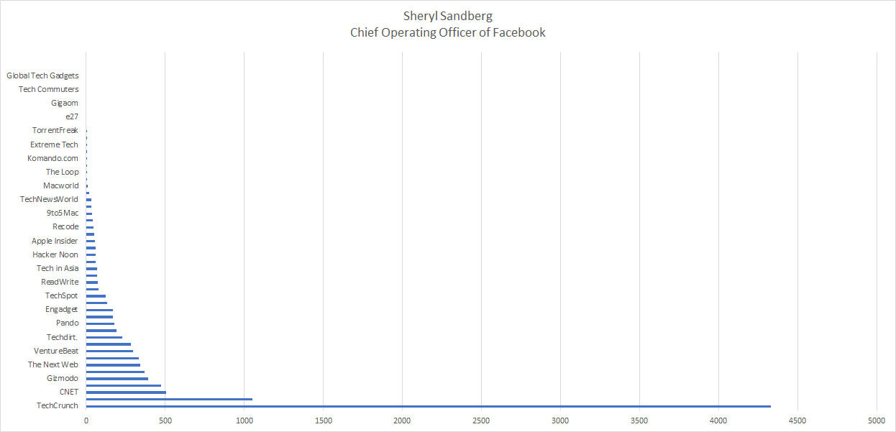
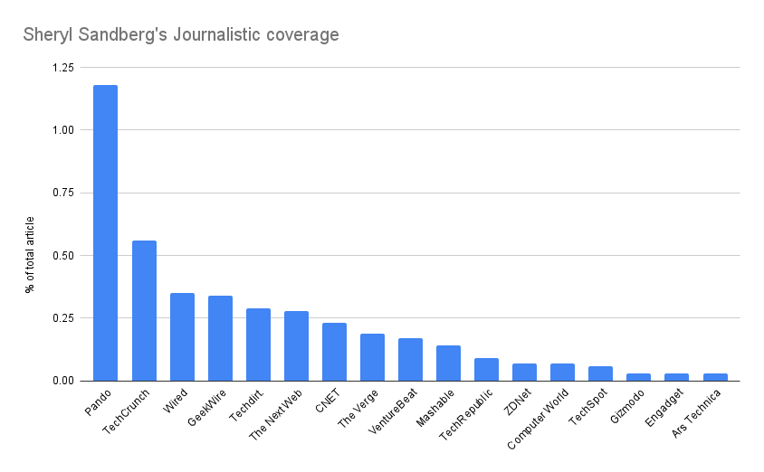

Sheryl Sandberg’s Journalistic coverage
How the COO of Facebook is covered by 50 Tech blogs

Sheryl Sandberg is a woman like all these 21 software engineers who were the subjects of one article of the Greyio heart Experiment, a publishing experiment about shedding light on women who do works that matter in the tech industry. It happens that Sheryl is the first woman holding a key position in one of the biggest tech companies in the world. Sheryl is the Chief Operating Officer of Facebook and I have been writing a bit about business operations as being one of the three core fundamental components that make every company move forward. The two Other being Finance and Marketing, every other specific field of a company being a child of one of these three components but this article is not about Business Management knowledge but an article of this other publishing experiment called words and metrics which is about providing metrics of word about topics but also personalities like Sheryl, Seth and Scott and others who will be covered in coming articles. But as Shery is a woman this article could also be seen as one highlighting the great work of women like the articles of the greyio Heart Experiment. Facebook and its social responsibility is a very big debate that is not the topic of this article. Then I should tell you that I am sorry for not being able to go into facebook’s responsibility of diffusing or censuring political content and other critical content. This article is about providing you an idea about how the 50 tech blogs are covering the name of Sheryl Sandberg in their published articles and as I have explained in the other articles of Word and metrics, you should know that these metrics are taken from a proxy that I could not divulge but please know that the trends and difference between labels are consistent. with the real values.
Here is the chart that shows you the approximate number of times that Sheryl Sandberg was the topic or was cited in an article of each of these 50 Tech blogs like the one that you are reading now.

it is clear from the chart that among these 50 Tech Blog, TechCrunch is the one that provided more coverage to Sheryl Sandberg and one can guess that Facebook should also have this same level of coverage like how its level of coverage is high in articles published on Medium and we have already discovered this fact with this article entitled metrics of names of tech companies.
But this chart that I have shown you above is just considering a metric which is like counting the number of times the name of Sheryl Sandberg appeared in articles of these 50 tech blogs. For better judgment taking into account all articles published by these tech blogs and computing the proportion of these articles that is about Sheryl or cited Sheryl could give you a better point of view. Again the total number of articles used for getting these ratios is an approximation using a proxy as a mean of measurement. Here is the chart but I have considered only 16 tech blogs because of time constraints.

You could see that Pando which was classed 7th in the first chart is now leading the peloton in terms of the ratio of coverage because this tech blog has fewer total articles than the other but has cited Sheryl more times relative to this total number of articles. Apart from this change the ranking of tech blogs according to the ratio of coverage of the name of Sheryl Sandberg is quite stable because Techcrunch, Wired, Geekwire, Techdirt, and so on are the tech blogs that covered the most the COO of Facebook, and this finding is something that one who knows the tech industry space should expect way before getting this data and this finding also will shape how this tech-enabled platform about tech journalism that I was writing about in this article will be designed and build. You can take this article as a preparatory work before the development of this tech-enabled platform and more articles like that will be soon published here.
For finishing this article I thought that it could be interesting to include the google trends chart of Sheryl Sandberg even if you may get this data using this google’s public service.
PS: Here is another chart that I will be writing about and publishing soon but this one is about the diffusion of innovations and searches then if you want to read it please visit my medium profile next time or subscribe to my mail list to get it inbox.